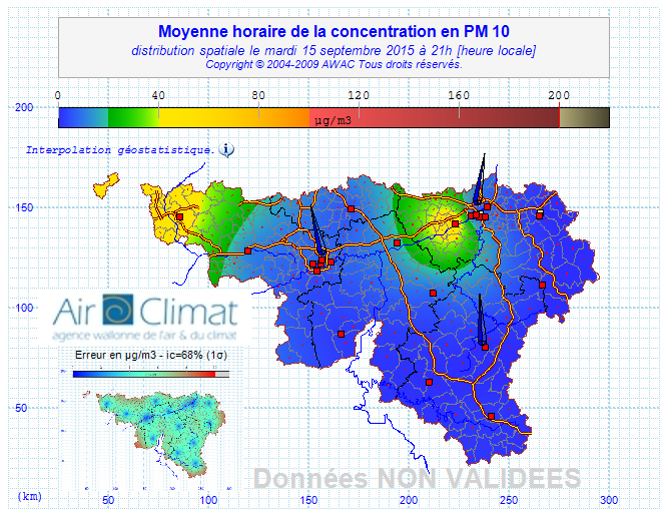
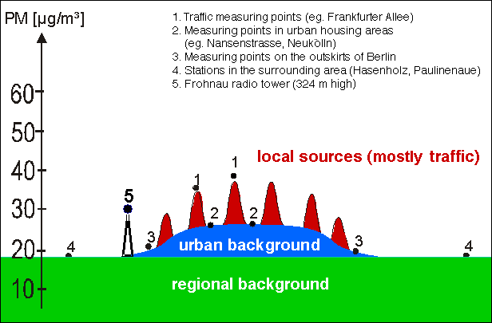
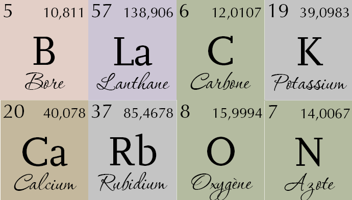
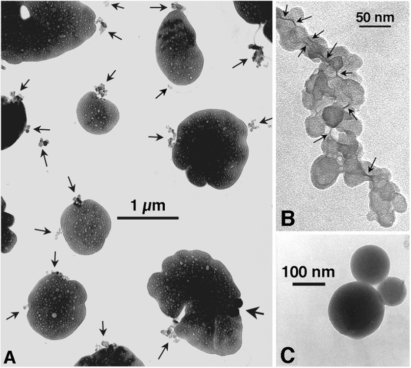
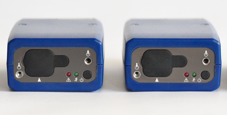
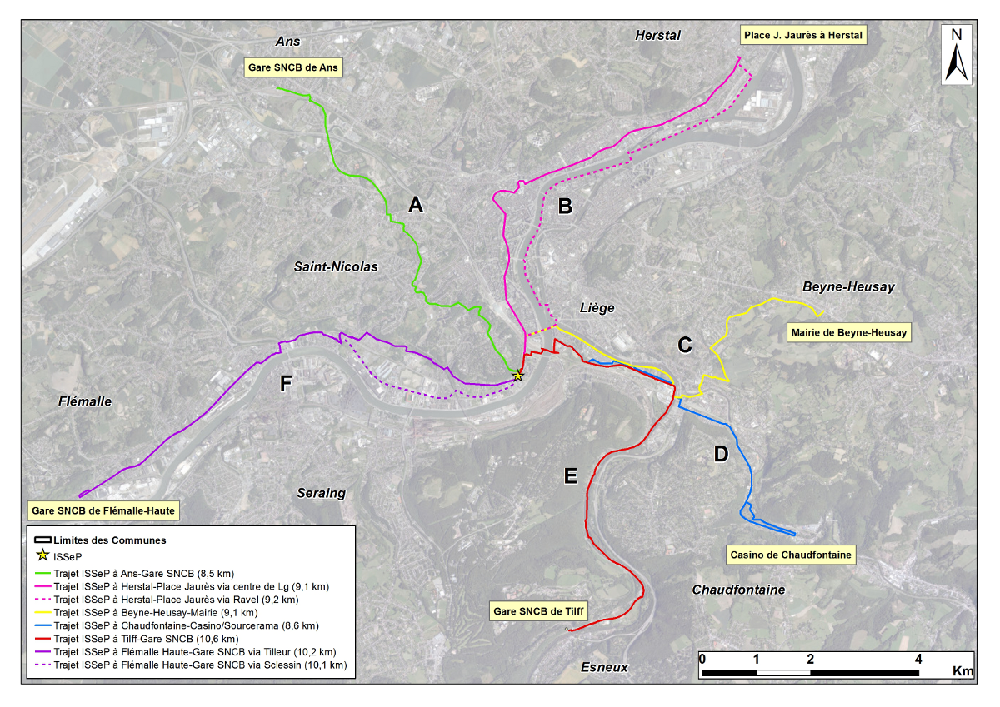
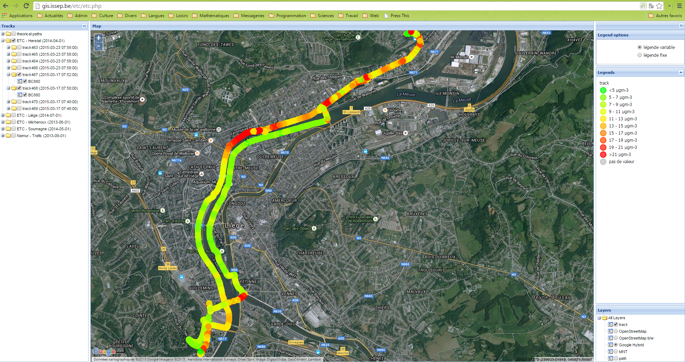
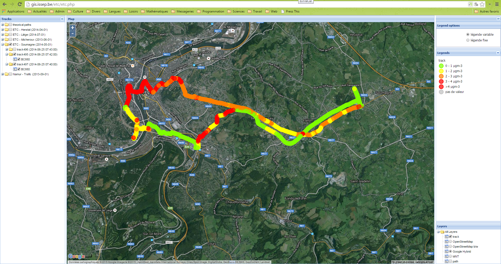

Your browser doesn't support the features required by impress.js, so you are presented with a simplified version of this presentation.
For the best experience please use the latest Chrome, Safari or Firefox browser.
Présentation du projet ExTraCar et des premiers résultats de l'actuelle campagne de mesure
par Luc Bertrand, François Detalle, Nicolas Fernémont, Fabian Lenartz
et avec le concours de nombreux volontaires
Action ISSeP lors de la semaine de la mobilité - 17 septembre 2015
Quelques mots sur la qualité de l'air
- Diversité
- Directive européenne
- Réseau de surveillance
- Nombre
- Emplacement
- Dépassement

Carte issue du site web d'information au public de l'AwAC, l'ISSeP et l'UMons

Diagramme tiré de l'étude SenStadt (2005b)
ExTraCar
Exposition, Trafic et Carbone noir


Image tirée de l'article de Posfai et al (1999)

Photo issue du site d'AethLabs
Que fait-on ensuite de ces milliers de mesures ?
- Déchargement
- Optimized Noise-reduction Algorithm
- Appariement temporel et insertion dans la base de données géoréférencées
Terrain d'expérimentation

Et après ...
- A court terme
- Analyse des résultats de la mesure sur un maillage régulier du réseau routier de la ville
- Analyse comparative avec les données du réseau de surveillance en continu
- Modélisation des concentrations en carbone noir en six points remarquables
- A moyen terme
- Extension de la mesure à d'autres entités
- Validation complémentaire basée sur des trajets aléatoires dans la ville de Liège
Collègues et aide extérieure
- Alain Caprioli et Pierre Crespin
- Marie Gohy et Isabelle Minet
- Laurent Spanu et René Posset
- Sophie Crèvecoeur, Arnould Defossa, Simon Garzaniti, Yves Jean-Pierre, Fabrice Offredi et Philippe Roelandt
- Guy Gérard, Paul Petit et Guy Schroyen
- Ibrahim El Ghazi
- Emmanuelle Sacré
Partenaires
- Bruxelles-Environnement
- Olivier Brasseur
- Priscilla Declerck
- Thierri Devos
- Université de Liège
- Yves Cornet
- Jean-Paul Kasprzyk
- Christophe Louis
- Université de Hasselt
- Davy Janssens
- Sylviane Tchiaye Dongmo
Comité d'accompagnement
- AwAC
- Benoît Debast
- Pascal Théate
- Wim Verhoeve
- Ville de Liège
- André Schroyen
- Vincent Lesage
- Nadine François
- Roger Putters
- Pluris
Merci de votre attention
Références
- H.L. Brantley et al (2014), Mobile air monitoring data-processing strategies and effects on spatial air pollution trends, Atmos. Meas. Tech., 7:2169-2183
- G.S.W. Hagler et al (2011), Post-processing Method to Reduce Noise while Preserving High Time Resolution in Aethalometer Real-time Black Carbon Data, Aerosol and Air Quality Research, 11:539-546
- M.R. Van Poppel et al (2013), Methodology for setup and data processing of mobile air quality measurements to assess the spatial variability of concentration in urban environments, Environ. Pollut., 183:224-233
- http://baerlin.iass-potsdam.de
Bonus (1/2)

Bonus (2/2)
